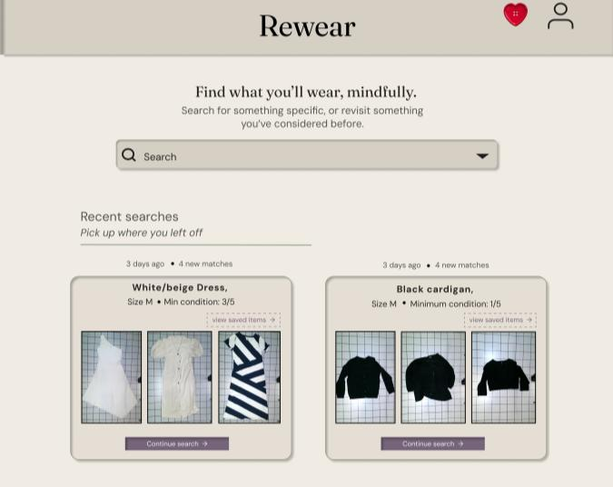
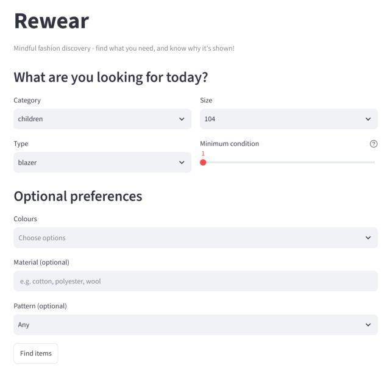
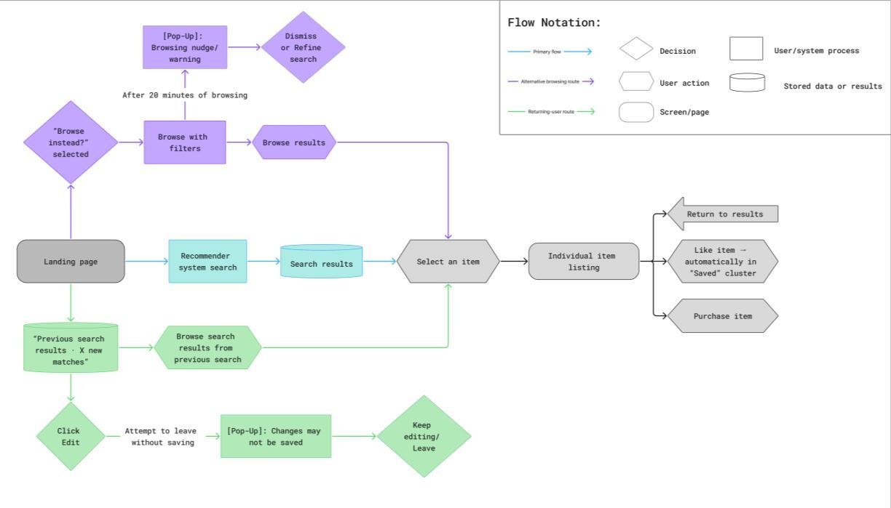
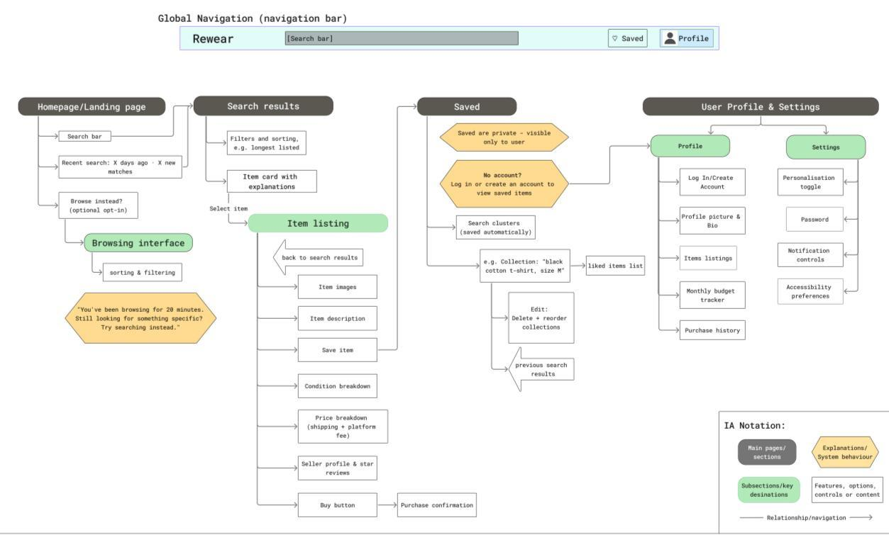
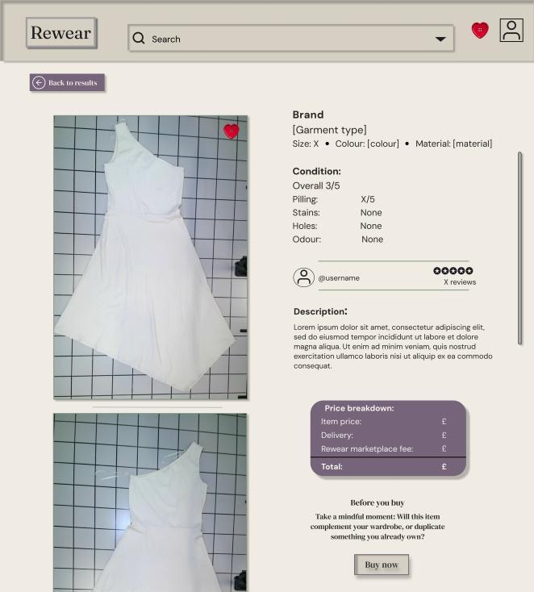
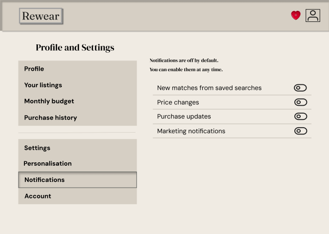
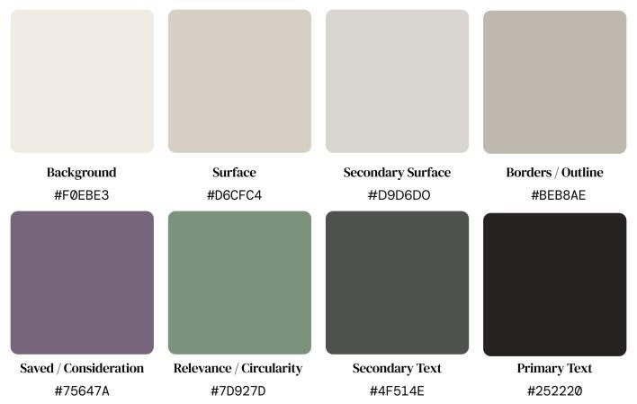

Rewear.
Designing second-hand fashion discovery around transparency, reflection and user autonomy.
Can a resale marketplace help people choose more intentionally?
Second-hand fashion platforms promise a more circular way to shop. Yet the same platforms can encourage continual browsing, personalised discovery and immediate purchasing. My dissertation investigated the tension between those sustainability narratives and the digital experiences through which people encounter clothing.
I explored how explainable AI (XAI) and Value Sensitive Design (VSD) could inform an alternative: a marketplace that makes recommendations understandable, keeps user choices visible and creates room for reflection.
How can explainable AI and Value Sensitive Design be applied to a second-hand fashion resale platform to support user autonomy and mindful consumption while avoiding dark patterns?

The result was Rewear: two complementary artefacts—a functioning content-based recommender and an interactive marketplace prototype. The recommender explores how matching can be explained; the Figma prototype explores how the surrounding interface can support autonomy.
Connecting platform critique with practical design
I combined a literature review with comparative platform audits and iterative prototype development. The research connected fashion consumption, recommender systems, dark patterns, explainability and human–computer interaction. VSD provided a way to treat autonomy and transparency as design requirements throughout the experience.
Why Vinted and Depop?
Both are fashion-focused peer-to-peer resale platforms, but they present discovery, social interaction and personalisation differently. Comparing them helped me examine how different interface choices can shape similar shopping journeys.
A bounded, repeatable audit
The audit focused on the desktop buyer journey, excluding seller interfaces and mobile apps. I used newly created, inactive accounts on the same day to reduce variation caused by account history and timing.
Task-based walkthroughs examined the landing page, search, listings, recommendations and cart or checkout stages. I adapted a dark-pattern taxonomy covering forced action, interface interference, nagging, obstruction, sneaking, social proof and urgency. Findings were recorded in a comparison spreadsheet and supported by annotated screenshots.
This approach examined visible interface behaviour. It could reveal what the experience foregrounded or concealed, but could not establish the internal causes of a platform’s rankings or measure effects on actual purchasing behaviour.
Transparency depends on what people can see and control
The comparison identified useful design practices alongside tensions between engagement, transparency and user autonomy. These observations belong to the dissertation’s audit context; they are not a live assessment of either platform.
| Observation in the audit | Design response in Rewear |
|---|---|
| Infinite scrolling and discovery-led interfaces encouraged continued browsing. | Prioritise explicit search and returning to an existing intention. |
| Item rankings and broad matches were not consistently explained. | Show which selected garment attributes each recommendation matches. |
| Social-proof cues, offer loops and urgency competed for attention. | Use restrained actions, saved collections and reflection prompts. |
| Some settings were preselected or their effects were unclear. | Keep personalisation and notifications off by default, with contextual explanations. |
| Fee visibility, promotional labels and public activity disclosures varied. | Foreground price breakdowns and explain information visibility. |
Learning from strengths as well as gaps
Vinted offered useful controls for sizes, brands and notification preferences. Depop showed contextual recommendation groupings and full price breakdowns on individual listings. The challenge was to carry the useful principles across the whole journey, rather than providing isolated moments of transparency.
A central insight was that technical disclosure and usable explanation are different things. Publishing details about infrastructure does not necessarily help someone understand why a particular item is shown to them. Rewear therefore connects explanations to the action and decision immediately in front of the user.
From garment metadata to explainable recommendations
A real second-hand clothing dataset
I used the Clothing Dataset for Second-Hand Fashion (Farrukh Nauman, 2024), a clothing-sorting research dataset published through Zenodo under CC BY 4.0. For a manageable prototype, I selected 957 garments from station2’s February 2024 subset.
Its images and JSON annotations supplied category, type, size, colour, material, pattern and condition information. The condition data also included pilling, stains, holes and odour. Price estimates were excluded from the recommender methodology because they were approximate and recorded in Swedish kronor.
Development workflow
I loaded and cleaned the JSON metadata with Python and pandas, developed the matching logic in a Jupyter notebook, and adapted it into a Streamlit application. The deployed artefact brought together the Python script, garment dataset and dependencies through a GitHub repository.
- Establish eligibility. Category, type, size and minimum condition are hard filters. Items that fail those requirements are removed.
- Score optional preferences. Colour, material and pattern influence ranking without becoming mandatory constraints.
- Combine preference matching and condition. Condition contributes to the final ranking as well as setting a minimum threshold.
- Return up to ten recommendations. A bounded result set keeps attention on a manageable selection.
- Explain each match. Item-level reasons connect the output to the user’s selected attributes.
These weights were prototype design choices, not preferences established through user research. The distinction between hard filters and soft preferences preserves flexibility in a constrained second-hand inventory, where a perfect match may not exist.
Explainability at the point of choice
Each result includes a “Recommended because it matches…” explanation and visible garment condition details. Recommendations rely on explicitly selected preferences rather than inferred browsing history or behavioural profiles.
Horizontal result rows provide room for explanations and garment details. The minimum-condition slider makes an otherwise abstract threshold visible and adjustable. The interface is intended to support attentive comparison; whether it achieves that requires user testing.

Making autonomy part of the whole journey
The Figma artefact extends beyond a recommendation list into marketplace navigation, individual listings, saved collections, profile and settings. I developed low- and high-fidelity prototypes, user flows and information architecture, using component variants, overlays, dropdowns and editing states to demonstrate intended interactions.


1. Search before endless discovery
The homepage makes intentional search central. Returning users can pick up previous searches, reducing the need to recreate an intention from memory. Open-ended browsing remains available as a secondary route rather than the default experience.
2. Explain costs and condition before purchase
The listing design foregrounds detailed garment condition and a price breakdown. A “Before you buy” prompt asks whether an item complements the user’s wardrobe or duplicates something they already own. The design makes space to reconsider before acting.

3. Make settings meaningful
Personalisation and notification controls start off and include explanations of their purpose. Other contextual disclosures explain profile visibility and collection privacy. The aim is to make consent and control understandable where they are used.

4. Support saving and reconsideration
Saved collections allow garments to be curated, compared and revisited. The budget tracker makes a self-defined spending limit visible. These proposed features shift emphasis towards reflection without removing the possibility of browsing or buying.
A warm, restrained visual language
I used muted neutrals, plum and sage, with whitespace and a clear typographic hierarchy. Plum signals saving and revisiting; sage offers a discreet cue to relevance, condition and circularity. The palette and layout respond to the visual density and competing interface elements identified in the audits.

Try the interactive Figma prototype
Explore the marketplace journey, listings, saved collections and settings. Use the full-screen control for a closer look.
A working intervention, with questions still to test
The dissertation produced a functional explainable recommender and an interactive interface prototype. Together, they demonstrate a practical way to connect explicit preferences, contextual explanations and VSD-informed interface choices.
The outcome is a proof of concept. It does not establish that Rewear reduces overconsumption, increases trust or changes behaviour. No formal user testing was conducted, and readable explanations do not automatically produce appropriate trust.
Trade-offs I identified
- Ranking is still a design decision. Fixed attribute weights may not reflect how different people prioritise colour, material or pattern.
- Ten results balance focus and coverage. A small set may be manageable, but could hide relevant items as the catalogue grows.
- The dataset has a different original purpose. Clothing-sorting annotations provide useful structured attributes, but are not equivalent to a live resale marketplace.
- Desktop audits offer a partial view. The findings do not represent every feature, mobile experience or long-term account history.
- Less behavioural data limits evaluation. Data minimisation supports control, while making preference satisfaction harder to assess without a separate research design.
What I would test next
A next phase would investigate whether people understand the recommendation reasons, how they interpret control settings, and whether reflective features are useful or burdensome. I would revisit the weights and result limit with a broader catalogue and evaluate the interface with users before making behavioural claims.
The project strengthened my ability to connect critical research to a technical implementation and a coherent design rationale. My central learning was that explainability needs both an understandable system and an interface that gives that understanding practical value.
Case study adapted from my MA Digital Humanities dissertation. Prototype screenshots are reproduced from that work. Garment imagery and metadata originate from the Clothing Dataset for Second-Hand Fashion (Farrukh Nauman, 2024), CC BY 4.0.